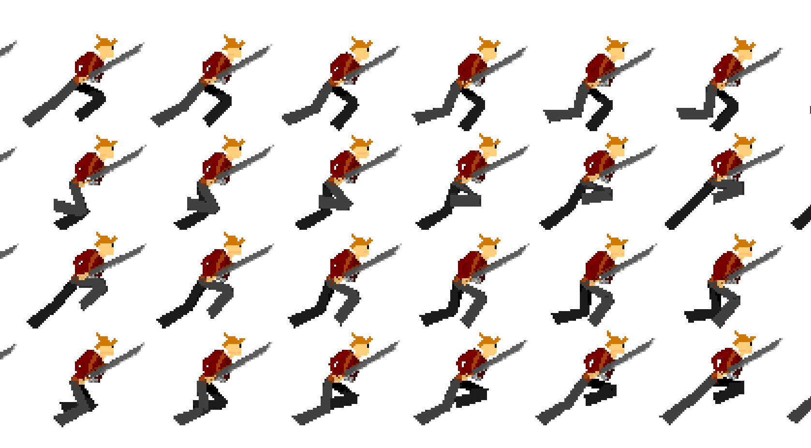
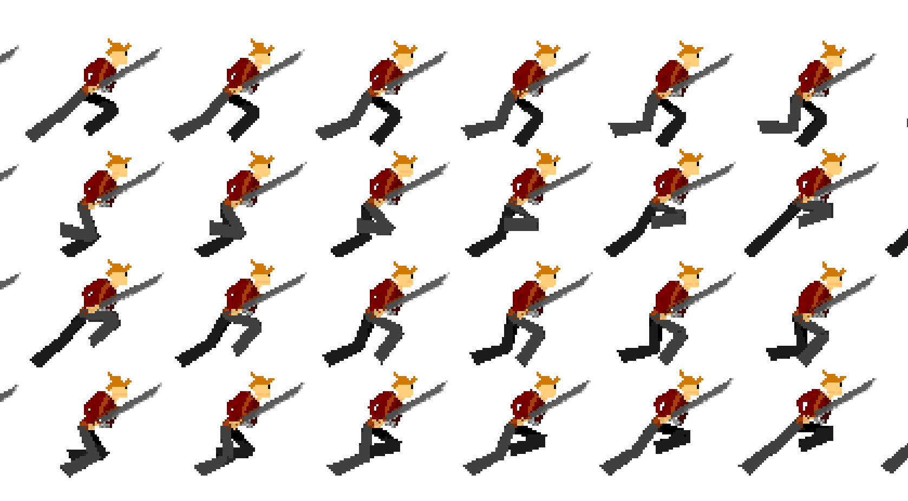

My work on project:
Total ZEN
This game was going to be 2D hack n' slash platformer, with the player having different abilities
affecting movement speed and attack power. The game would also have had an emphasis on story, NPC interaction, and collectables.
I learned a lot about UI design, game progression systems, and sprite rendering during the time of development.
I also did the coding for the basic control of the character and XML serialization.
We Ultimately stopped working on this due to fear of getting burnt out, as we were moving pretty fast through development.
Character Logic
The game was a 2D Hack n' Slash platformer and our first 2D game.
When my co-developer told me about his idea for this game,
we were both excited to try out some ideas and dove head first into Unity's 2D physics engine
I quickly got to work on a physics based character controller, complete with light combat mechanics.
To this day, I still work on it and use it for my 2D projects.
A playable demo featuring the controller can be found on this page.
XML Serialization
Pretty early in development, it it became clear we wanted a way to save game progress.
I've never done data serialization beyond Unity's "Player Prefs"
and was looking forward to learning, however it proved to be much more difficult than I had anticipated
and turned out pretty clunky. But it did lay down the ground work for future
saving systems that I used in later projects. After I finished the serialization system
I designed a menu UI to interface with the files which also was much harder
to do than I thought it would be, but I think it worked out nicely
Sprite Animation
Since neither me or my co-developer had experience in 2D sprite Animation,
we kind of cheated a little bit. I made a rudimentary 3D model of our character and animated in in 3D space
then rendered the animations at low resolutions and compiled the rendered frames in a sprite sheet.
I still wanted it to maintain the cartoon look so I made a shader in blender
that behaves much like a cel shader to give it that extra bit of styling I was looking for.
 
